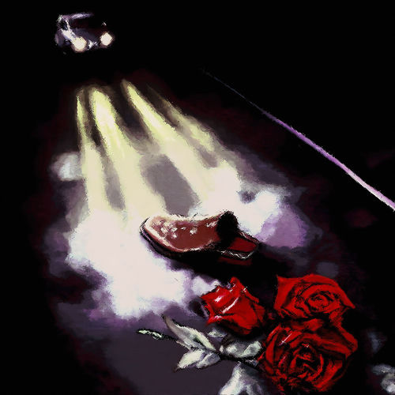
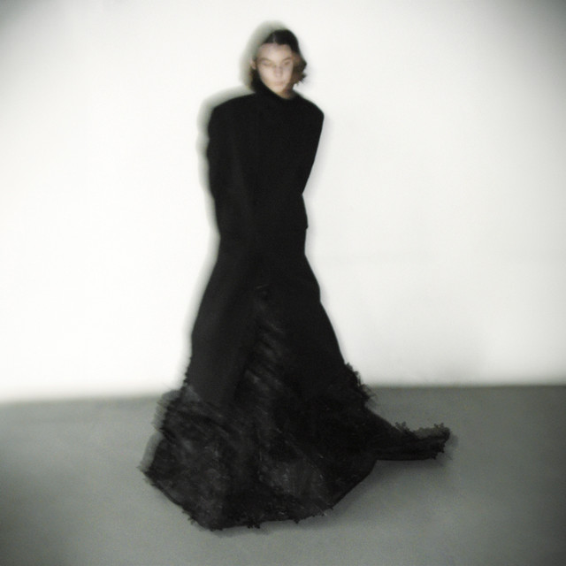

Навыки
- Работа в DAW: уверенное владение FL Studio и Ableton Live для написания и аранжировки треков
- Инструментальные навыки: игра на гитаре и базовые навыки владения клавишными инструментами
- Звукорежиссура: сведение и мастеринг музыкальных инструментов и готовых композиций
- Композиция: написание оригинальных музыкальных композиций в различных жанрах.
Проекты
-
Завтра beat (Eb Minor 150 bpm)

-
Летник beat (C Minor 130 bpm)

-
Barry Dylan beat (D Minor 115 bpm 450hz)

-
Martine Rose beat (F# Major 112 bpm)

-
Web 2.0 beat (G# Minor 126 bpm 450hz)
